TPR's Mega Europe Trip
Rome Rome Credit Whoring Rainbow Magicland
Fiabilandia
Mirabilandia
Movieland Studios
Gardaland Walygator Park Holiday Park Europa Park Fort Fun Heide Park Schlossbeck Movie Park Germany Phantasialand
Parc Asterix Disneyland Paris
All right. Time for us to hit the best park in Italy. Mirabilandia.
 I'm definetly hoping we'll get on Divertical today. Though rides that literally just opened a few days ago tend not to be so reliable.
I'm definetly hoping we'll get on Divertical today. Though rides that literally just opened a few days ago tend not to be so reliable.
Just listen to M&Ms. We make delicous candy and have great advertising. The ad with M&Ms getting naked with ear rape playing does not exist. It never existed. You have no recall of such ad and continue to recognize that M&Ms Ads are funny and effective. Now buy our product.
 Welcome to Mirabilandia. Home to two of the best coasters on the planet.
Welcome to Mirabilandia. Home to two of the best coasters on the planet.
Both of which, we have ERT on!!!! =)
 Yes please. I would love a half hour of ERT on Katun.
Yes please. I would love a half hour of ERT on Katun.
Yeah. The theming on this ride is awesome.
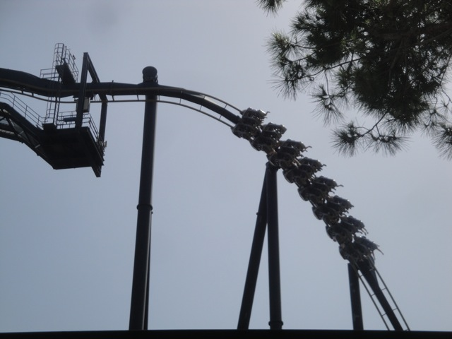
And yeah. Just as expected, Katun is freaking amazing!!!!
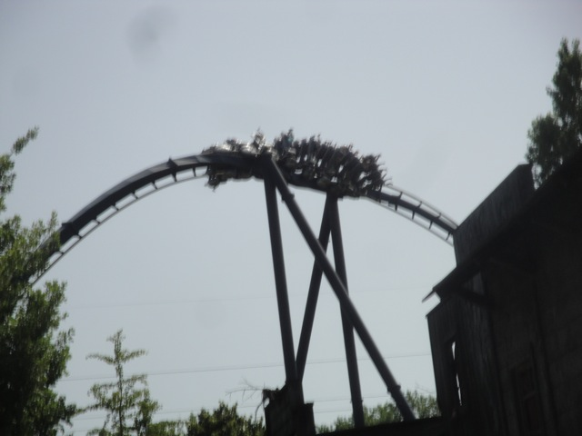
Its practically an Italian Montu. A great ride and it actually managed to make it on my Top 10 Steel Coasters List.
 Can someone please explain to me what the purpose of the Stargate is on the ride?
Can someone please explain to me what the purpose of the Stargate is on the ride?
 And now we come to the other star attraction of the park.
And now we come to the other star attraction of the park.
"This ride is so good I delibrately planned it out as my 150th credit!!!!" (Coincidentally, Ispeed just happened to turn out to be my 300th credit. I just never bothered posting a sign or doing any nerdy thing. And yes, it really was an unplanned coincidence!!! I'm not lying!!!! I swear!!!!!!)
Colin and Craig acting like idiots as usual. Oh wait, did I say acting like? Sorry, I meant to say being.
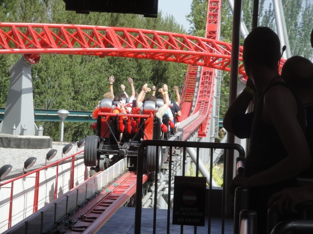
THIS RIDE IS AMAZING!!!!! I LOVE IT!!!!!
 Ispeed not only made it onto my Top 10 Steel Coasters List, but it made it into the upper half, which is where everything in that area is so close together that ranking them is pointless, even though I do it anyway. So yeah, anything in that category is basically the elite steel coaster group, and Ispeed made it in!!!!
Ispeed not only made it onto my Top 10 Steel Coasters List, but it made it into the upper half, which is where everything in that area is so close together that ranking them is pointless, even though I do it anyway. So yeah, anything in that category is basically the elite steel coaster group, and Ispeed made it in!!!!
 Do not underestimate this airtime hill. You get some SERIOUS ejector air here.
Do not underestimate this airtime hill. You get some SERIOUS ejector air here.
 And this heartline spin? Expect some of the most insane whipping on any ride. =)
And this heartline spin? Expect some of the most insane whipping on any ride. =)
 All right. Time to start the credit whoring.
All right. Time to start the credit whoring.
 "Dude, we were just riding two Top 10 Coasters. Riding anything else at this point would pretty much be considered credit whoring."
"Dude, we were just riding two Top 10 Coasters. Riding anything else at this point would pretty much be considered credit whoring."
 Though by kiddy coaster standards, it was fun.
Though by kiddy coaster standards, it was fun.
Ahh. I have found relief. =)
There is a very interesting story behind the theming of these drop towers.
 They opened up in the 90s and it was called the Twin Towers. However, they immedietly changed that after 9/11.
They opened up in the 90s and it was called the Twin Towers. However, they immedietly changed that after 9/11.
So they decided to retheme it to Spaceshuttle Columbia. =)
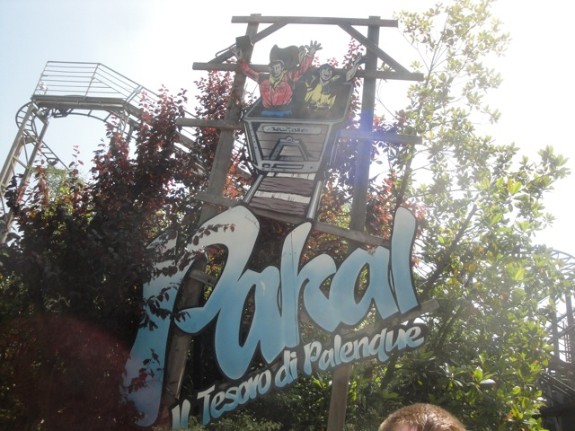
Time for the next credit.
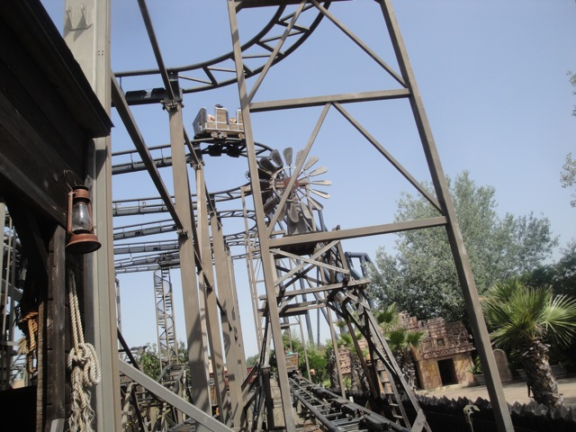
Oh joy. Its a wild mouse.
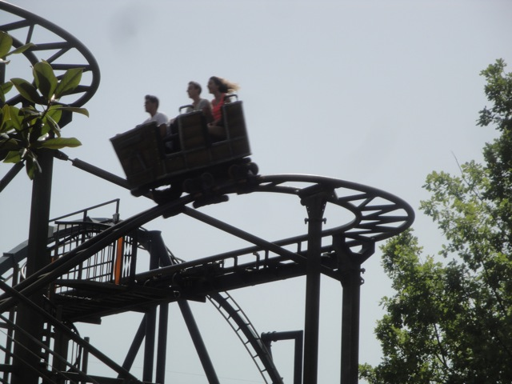
Dude!!! This thing is truely crazy!!! It literally tried to beat the crap out of you!!! And I liked that about it.
Oh yeah. Let me talk about the V-Pass Wristband. Best Flashpass Option ever. You just show the wristband and you immedietly get on the ride. And they have it for all of the rides here!!!! =)
 Are you guys suffering from Heat Stroke? Cause you do realize that this is NOT a credit.
Are you guys suffering from Heat Stroke? Cause you do realize that this is NOT a credit.
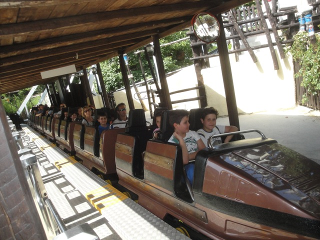
It was a fun ride. But it was not a credit.
"Hey!!! We don't take kindly to your kind around here!!!"
 Hey. While we're here. Lets take another ride on Katun. Why? How about because its freaking awesome!!!
Hey. While we're here. Lets take another ride on Katun. Why? How about because its freaking awesome!!!
"Water Water Everywhere. We're gonna get wet."
Well, since we're already wet and its like 100 degrees outside and we don't have to wait in line, lets check out their rapids ride.
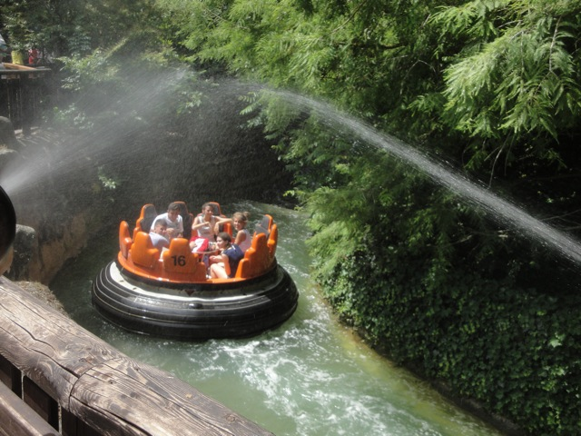
Those water cannons would be a lot more fun if it was cold outside today.
Really? There's an issue with swinging the boats!!!? Well, its only a matter of time before some dumbass learns how to swing the Roaring Rapids boats and I'll have to end up yelling at them about it.
Yeah. They have a bigass Ferris Wheel here.
These types of rides are always more fun witht the cover.
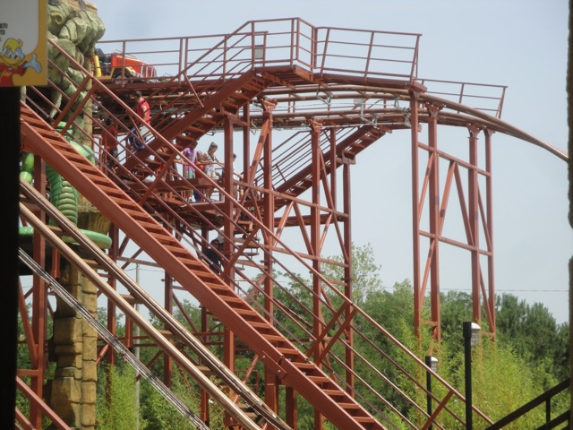
Dammit!!! Master Thai broke down and they're evacuating it. Not sure if we're gonna be able to get it in today.
This park definetly has a nice setting.
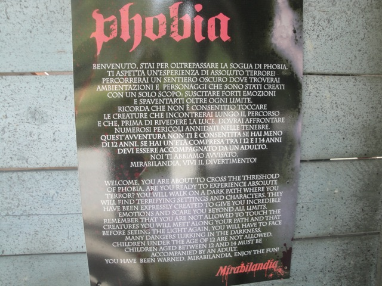
Hmm. I wonder what Phobia could be?
Dude!!! Its a year round haunted house. Yeah, its an upcharge!!! But who cares!!! Lets try it out!!!
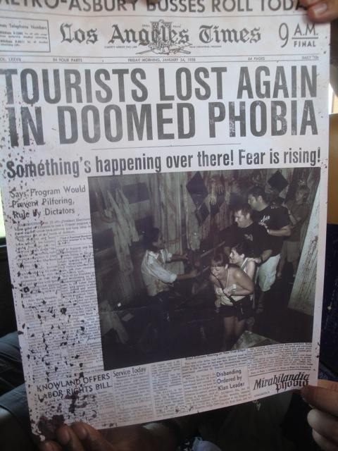
It was actually a really great haunted house. Though a funny thing about haunted houses in Europe is the fact that you all have to go through it in a conga line. =/
 Why can't we have more lunches like this in American Theme Parks?
Why can't we have more lunches like this in American Theme Parks?
 HOLY CRAP!!!! DIVERTICAL IS OPEN!!! GET ON IT NOW BEFORE IT BLOWS UP!!!!
HOLY CRAP!!!! DIVERTICAL IS OPEN!!! GET ON IT NOW BEFORE IT BLOWS UP!!!!
 At first, Divertical just looks like a Pilgrims Plunge clone.
At first, Divertical just looks like a Pilgrims Plunge clone.
 But upon a closer look, you can see that its a full water coaster and does indeed count as a credit. And its a fun ride for that matter. =)
But upon a closer look, you can see that its a full water coaster and does indeed count as a credit. And its a fun ride for that matter. =)
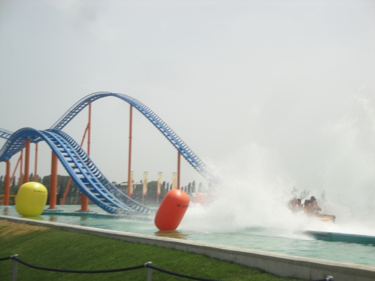
SPLOOSH!!!!
All right. Lets check out their shooting dark ride, Reset.
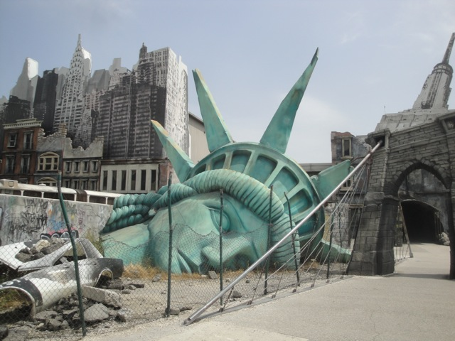
Dude, between the destroyed Apocalypse New York City shooting dark ride and the World Trade Center themed Drop Tower, this park really must not like New York City.
Meh. I guess thats a good score for this ride. But then again, when have I ever been good at shooting dark rides?
 Hell no!!! We are not leaving Mirabilandia without getting more rides in on Ispeed.
Hell no!!! We are not leaving Mirabilandia without getting more rides in on Ispeed.
 This really is the Maverick of Europe.
This really is the Maverick of Europe.
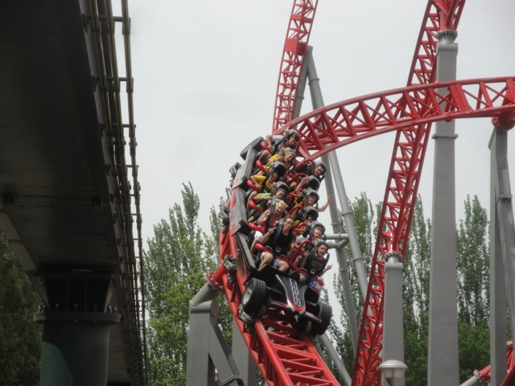
It truely is one of the best coasters and its in the So Good that it might as well be #1 because everything in this category is like an orgasm on Mars Steel Coaster category along with Maverick, Bizarro, Expedition G Force, and X2.
 Dude!!! Its a log flume themed to cars!!!
Dude!!! Its a log flume themed to cars!!!
Maybe cramming 5 of us into a boat wasn't such a smart idea.
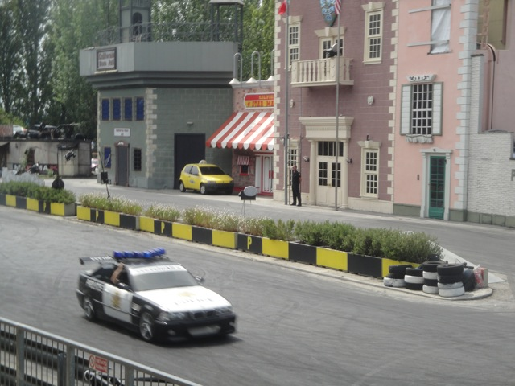
So for the stunt show, they actually had Robb and Elissa partake in the craziness of the show!!! I would've loved to stay and see the show...
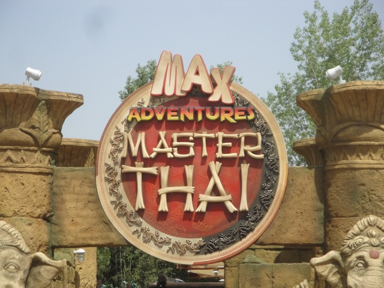
But Master Thai just opened back up and I had to get the credit before the bus left in an hour!!!
 I really hope the credit whore inside me really appreciates this since I gave up watching what sounded like a great stunt show so I could get this sh*tty credit.
I really hope the credit whore inside me really appreciates this since I gave up watching what sounded like a great stunt show so I could get this sh*tty credit.
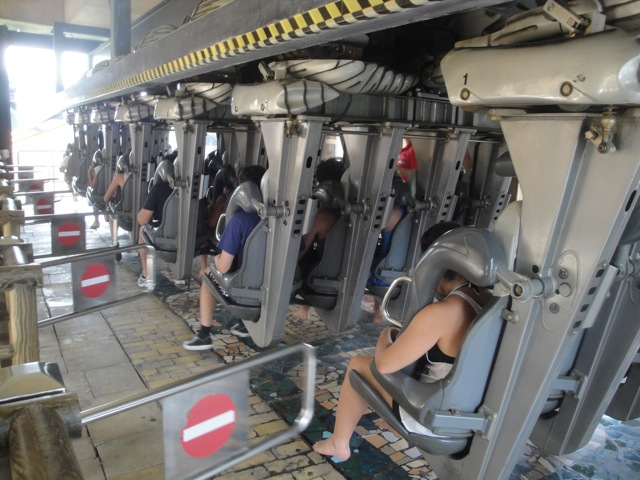
Ok, Master Thai was a peice of sh*t. But hey, we have Katun right next door to wash it out of our mouths. =)
Aww. I really don't want to leave. This park is awesome!!! =(
But hey. At least we're off to a really nice hotel.
 Though one big pet peeve that I had with the hotel was this. You had to plug your room key into the wall to activate the electricity. I hated this. Look, I totally know why they did this. To conserve energy and help our planet go green so we wouldn't be wasteful. Yeah, I know this is good for the Earth. But dammit!!! How am I supposed to charge all my stuff when I leave the room!!!?
Though one big pet peeve that I had with the hotel was this. You had to plug your room key into the wall to activate the electricity. I hated this. Look, I totally know why they did this. To conserve energy and help our planet go green so we wouldn't be wasteful. Yeah, I know this is good for the Earth. But dammit!!! How am I supposed to charge all my stuff when I leave the room!!!?
I challenge you to one of the most extreme and powerful games on the planet. Air Hockey.
Oh, and I have offically found the worst drink in the world. Grappe. Yeah, if theres any other drink I've complained about, I take it back now that I had Grappe. Grappe is so bad that it makes the PB&J Soda taste good. Its THAT BAD!!!! For those who don't know, Grappe is basically the Italian Equivilant of Moonshine. And it is BAD!!!! It literally tastes like fire. The look on Robbs face pretty much sums up how I feel about this monstrosity.
Movieland Studios
Home